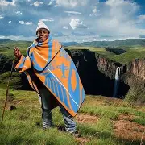
KOBO: Traditional blanket worn by men and women
KOBO: Traditional blanket worn by men and women
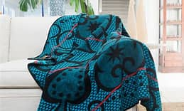 SEANA-MARENA: Prestige blanket worn by royalty or during ceremonies.
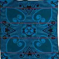MOTLATSI: Blanket symbolysing support or companionship.
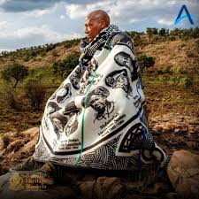MOFUMAHALI: Blanket associated with women.
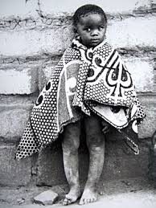LEHLOSI: Leopard-print blanket, symbol of strength.
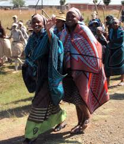KHARETSA: Blanket design featuring aloe, symbol of Lesotho.
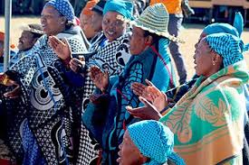MOKHIBO: Worn during women's traditional dance.
 MOKOROTLO: Worn during men's traditional dance.
MOKOROTLO: Worn during men's traditional dance. SESHOESHOE: Iconic printed cotton fabric used for dresses.
SESHOESHOE: Iconic printed cotton fabric used for dresses. THARI: Traditional wrap or shawl.
THARI: Traditional wrap or shawl. LEFELE: Skirt made from sehsoeshoe.
LEFELE: Skirt made from sehsoeshoe.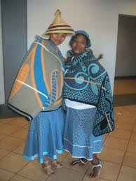
SEAPARO SA BASALI: Women's ceremonial dress.
SEAPARO SA BASALI: Women's ceremonial dress.
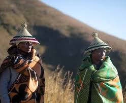SEAPARO SA BANNA: Men's traditional outfit.
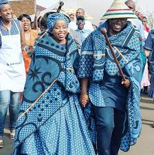SEAPARO SA LENYALO: Wedding attire.
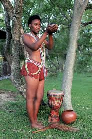SEAPARO SA BOCHA: Initiation attire for youth.
 SEAPARO SA MOKETE: Festival or celebration outfit.
SEAPARO SA MOKETE: Festival or celebration outfit.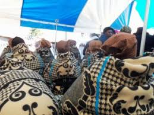SEAPARO SA POKO: Attire for peotry or storytelling events.
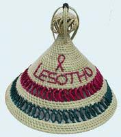MOKOROTLO: Conical hat made from grass, national symbol.
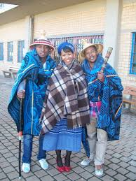TUKU: Headwrap worn by women.
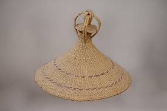SEFAKO: Rain hat or protective headwear.
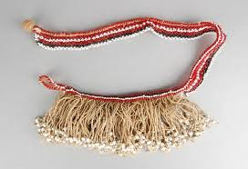SEFAHA SA MOKOROTLO: Breaded bad worn with the hat.
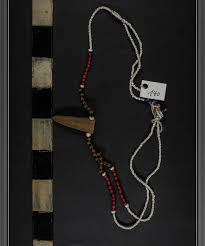SEFAHA SA TUKU: Decorative band for headwrap.
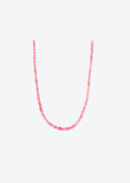LIPHOLOANA: Breaded jewelery and accessories.
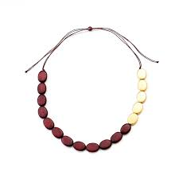LIKHARETSA: Aloe inpired beadwork.
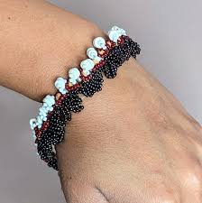MAHLALE: Beaded earings.
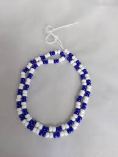MAQHAMA: Beaded belts or sashes
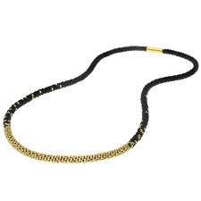 LIKHOMO: Cowhide accessories(symbol of wealth).
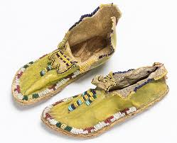 MEQATHATSO: Leather shoes.
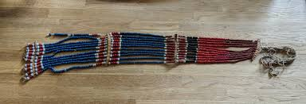 LIKHAKA: Traditional beads worn around the neck or waist, often symbolic of status or age.
 LETLAMA: Leather thong or strap used in traditional dress or as a fastening.
LETLAMA: Leather thong or strap used in traditional dress or as a fastening. KOBO E NTS'O: A mourning garment worn during and after funerals.
KOBO E NTS'O: A mourning garment worn during and after funerals. LIRA: a women’s wrap skirt with a matching shawl, often made from seshoeshoe fabric or decorated cloth.
LIRA: a women’s wrap skirt with a matching shawl, often made from seshoeshoe fabric or decorated cloth.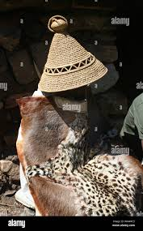 APARO TSA LEKOKO: early Basotho attire made from cowhide, sheepskin, or wild animal skins, worn before blankets became common.
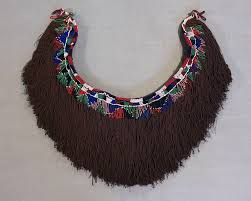 THETHANA: A waist skirt traditionally worn by young Basotho girls.
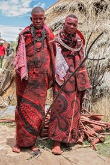 INITIATION REGALIA: ceremonial attire for boys and girls during lebollo (initiation), including blankets, beadwork, and sometimes masks or body paint.